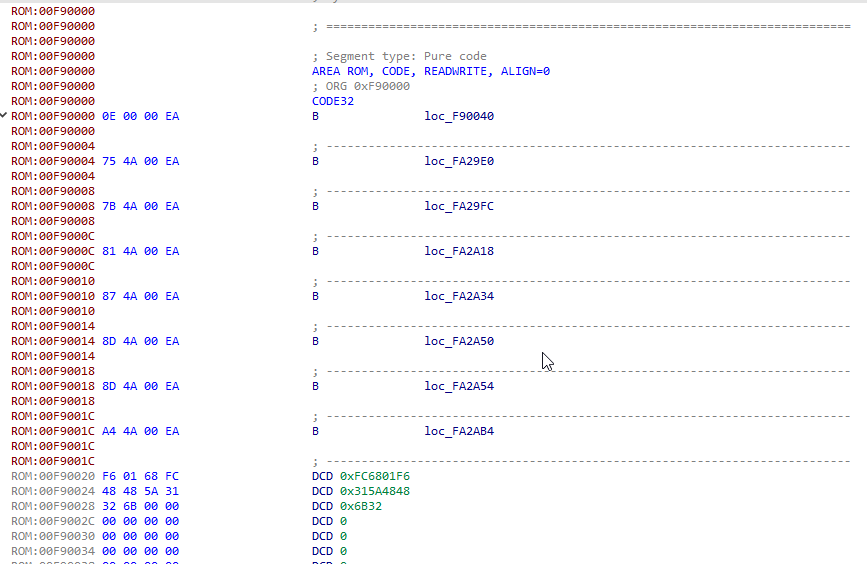
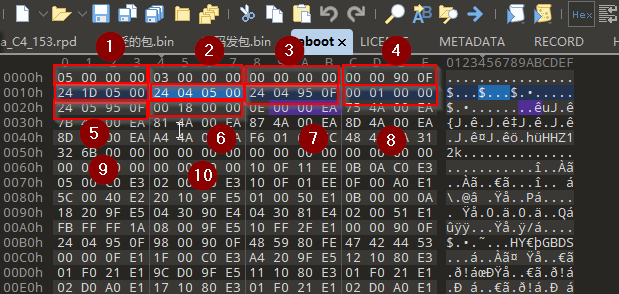

aboot分析一
前提
手里有一个nexus5手机，想分析研究一下。
实践
准备
- nexus5手机
- 电脑
- 系统版本:mra58k
- 软件：ida free,010editor
load bin.
aboot来自于手机包中,用imjtool提取bootloader-hammerhead-hhz12k.img文件,得到单独的aboot文件。这个文件并不是直接来自于存储芯片，而是需要fastboot工具刷写，自然而然这个文件是有文件头的， 文件头格式的定位需要逆向分析来实现，首先确定的是arm芯片的exception vector 一般追踪这个向量表则不难定位到文件的code segment，exception vector 有个特征是 b 0x123456,其中b指令就是0xEA,这个指令后边的立即数就是距离当前指令的偏移;还有一种方式就是直接在源代码中查找,这个源代码不用最新版也可以确定一些特征,aboot用的就是LK。  
除此之外要让逆向工具识别二进制，需要知道二进制的load base address. 在arm下一些指令如ldr是hard code读绝对地址字符串，根据这个特征就可以知道 load base address是多少了。一般会拿到头部的两个字节，然后根据头部的两个字节去在文件头中找到对应的数据结构。 当然这要保证拿到的文件是raw data,而非加密的文件。
除此之外
除此之外还有证书的部分，这部分的数据，一般在文件头前边或者文件的末尾，这个根据LK的源码或者是分析aboot中的逻辑可以判断出来位置和大小，然后在文件头中找到对应。 本章完.
参考
[1].http://www.newandroidbook.com/Articles/aboot.html